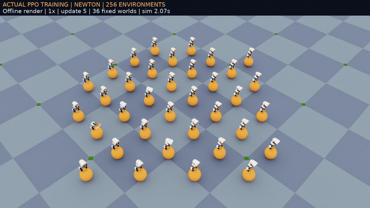

SELF-PACED WORKSHOP
让策略学习行走
体验一次 PPO 训练，理解观测、动作、奖励和检查点，同时保持后续课程使用固定模型。
一次强化学习循环

先给策略一个观测向量，包括身体姿态、角速度、关节状态、速度指令和上一动作。策略输出关节动作，物理引擎推进场景，奖励函数再评价这一步是否接近目标。PPO 收集一批这样的交互后更新参数，然后继续采样。
- 1收集观测
- 2采样动作
- 3推进仿真
- 4计算奖励
- 5PPO 更新
“环境数量”决定同时运行多少个机器人副本；“迭代次数”决定重复多少轮采样和更新。增大环境数会提高并行采样量，也会增加内存需求。训练奖励上升意味着优化目标正在改善，仍需要在独立情形中检查真实行为。
PPO 为什么不是“每一步奖励高就保留”
机器人迈步时，短暂抬起一只脚可能降低眼前的稳定性，却是向前移动必需的动作。强化学习因此关心一段时间内的累计回报，而不只看当前一步。折扣因子让较远未来的奖励权重逐渐减小，平衡短期反馈与长期效果。
PPO 中，actor 根据观测选择动作；critic 估计当前状态以后可能得到的回报。某次动作带来的结果比 critic 预期更好，就得到正的优势估计，更新会倾向增加它的概率；比预期差则相反。PPO 限制一次更新偏离旧策略的程度，减少策略突然变化带来的不稳定。它并不保证每次更新都让真实任务成功率提高。
训练时可以给 critic 更多仿真信息，帮助它评价轨迹，但部署的 actor 必须只依赖运行时确实能提供的观测。例如仿真引擎知道精确身体速度，不代表真实机器人有一个无误差的速度传感器。不要把仅用于训练或评分的真值偷偷接入部署控制器。
设计奖励时，先列出期望行为，再考虑可能的捷径。“奖励球移动”可能鼓励身体撞球；“奖励保持不动”可能让机器人拒绝行走。一个可操作的检查办法是同时记录目标指标和约束：速度误差、回合长度、摔倒、关节范围、触球方式。第三章只练习训练循环，完整任务的成功定义留到第七章检验。
运行一次短训练练习
python3 scripts/workshop.py train-walk \
--num-envs 64 \
--iterations 20 \
--seed 101 \
--output outputs/student-walk-01这是一段训练流程练习，不承诺 20 轮就能行走。预期结果：终端显示训练进度，新目录中出现训练记录、检查点和导出的策略。你可以观察损失、回报、回合长度如何变化，而不用等待长时间训练完成。
python3 scripts/workshop.py tensorboard \
--logdir outputs/student-walk-01 \
--port 6006在浏览器打开终端给出的本地 TensorBoard 地址。观察回报与回合长度是否同时改善。若回报增长但回合仍很短，检查奖励是否允许机器人通过短暂动作得分后摔倒。
显式测试自己的策略
python3 scripts/workshop.py walk \
--model outputs/student-walk-01/exported/policy.onnx \
--velocity 0.30 0.00 0.00 \
--seconds 12 \
--seed 202 \
--output outputs/student-walk-test-01这是你主动选择自己的模型。比较它与第二章固定模型的支撑、漂移和摔倒情况。完成练习后，后续章节仍使用 models/walk.onnx，不会因为这次导出改变默认策略。
为什么要做域随机化
真实舵机的摩擦、延迟和齿隙不会每次完全相同。训练时改变这些参数，可以让策略接触更多可能情形。随机化范围过窄可能过拟合；范围过宽则可能让任务难以学会。它帮助提高鲁棒性，但不能代替真机验证。
检查理解
为什么不能把训练过程中回报最高的一次，当作独立测试结果？
查看解析
因为它参与了学习或选型，且奖励未必等于任务成功。独立测试需要提前确定场景和成功标准，用未参与选型的条件统计所有结果。
检查点、训练曲线与独立测试
训练从随机参数开始，不加载课程行走权重。每轮 PPO 先收集多个环境的轨迹，再用这些轨迹更新策略。奖励通常组合速度追踪、身体姿态、动作平滑和接触相关项。总奖励相同的两个策略，可能分别靠“速度更准”与“少动更稳”得到分数，因此必须同时观察行为和各个奖励项。
initial.pt 保存训练起点；model_*.pt 保存训练检查点；env.yaml 和 agent.yaml 保存环境与优化配置；exported/policy.onnx 是用于推理的导出。检查点可包含优化器等训练状态，ONNX 通常只保留推理需要的计算图。不要把两者当成可以随意互换的文件格式。
建议记录三列：训练预算、未参与训练的测试种子、实际行为。20 轮练习的目标是走通采样、更新、保存与导出；不要因它表现差就替换后续章节的固定模型。增加预算时保留原实验，使用新输出目录，并说明你改变的是环境数、迭代数还是奖励。
检查理解
只保存 ONNX 文件，能否保证从中精确续训？
查看解析
不能。精确续训还需要优化器、归一化状态、随机状态及相同配置等信息；应保留完整检查点与训练配置。